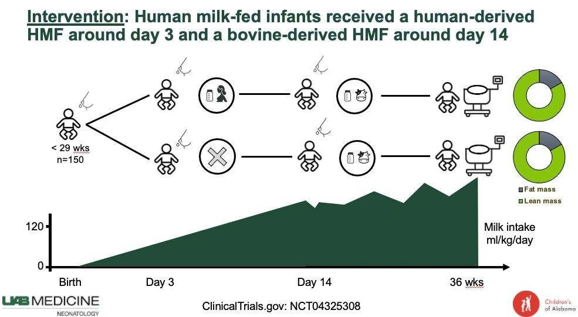

New Clinical Trial of Early Human Milk Fortification

In the pursuit of addressing cumulative protein and energy deficits seen in extremely preterm infants when unfortified human milk is provided during the initial two postnatal weeks, the exploration of fortified human milk as an alternative has gained momentum. With this in mind, our hypothesis centered on the potential benefits of initiating a fortified human milk diet early on, aiming to enhance protein synthesis, curb excessive weight loss, and ultimately foster improved growth.
Our study, designed as a masked, randomized trial, focused on extremely preterm infants (gestational age of 28 weeks of gestation or less) who were fed either maternal or donor milk. For the intervention group, a human milk-derived fortifier was introduced from the second day of feeding, thereby augmenting energy and protein content shortly after birth. This regimen continued until the eventual transition to a standard bovine-derived human milk fortifier, typically around postnatal day 14. On the other hand, the control group received unfortified maternal or donor milk until the standard bovine-derived human milk fortifier was introduced. Rigorous masking of caregivers ensured the integrity of the results.
During the recruitment period spanning from 2020 to 2022, we enrolled 150 infants, with a mean birth weight of 795 ± 250 g and a median gestational age of 26 weeks. Our analysis of the primary outcome, namely fat-free mass (FFM)-for-age z score at 36 weeks of postmenstrual age (PMA), did not reveal significant differences between the intervention and control groups. However, a deeper exploration into secondary outcomes unveiled intriguing trends. Notably, the intervention group displayed improved length gain velocities from birth to 36 weeks PMA, coupled with less pronounced declines in head circumference-for-age z scores over the same period. Additionally, we observed that early human milk fortification mitigated the decline in weight-for-age z scores from birth to postnatal day 14. Notably, the incidence of SIP, NEC, mortality, and the combined outcome of SIP, NEC, or mortality did not exhibit statistically significant differences between the two groups.
Our findings bring to light that fortifying human milk shortly after birth might not necessarily translate to increased FFM accretion at 36 weeks PMA. Nonetheless, early human milk fortification demonstrated noteworthy trends that hint at potential benefits, including improved length gain velocity and a reduced decline in head circumference-for-age z scores.
Read the full text article published in Pediatrics today: https://publications.aap.org/pediatrics/article/doi/10.1542/peds.2023-061603